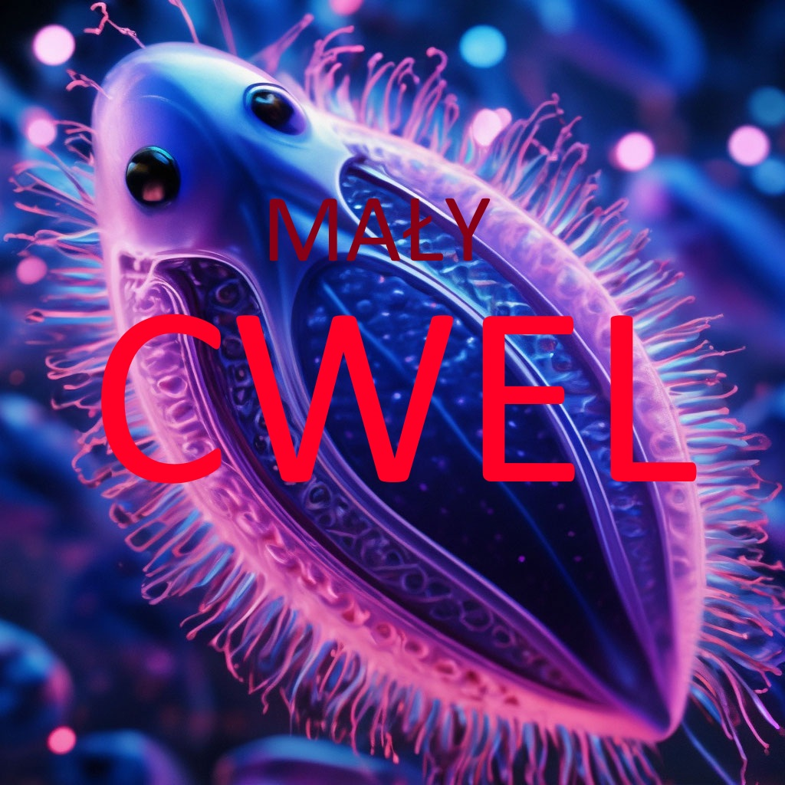

ICH SZEŚĆU

Dyskografia

BAKTERIA MUSIC
Rok wydania: 2026
- 1. Baktiera music
- 2. trepa martretor
- 3. lolololo
- 4. grzyptop
- 5. Musardrop
- 6. pindoloroperomero
- 7. popsmoke
- 8. szczerbortyczak
- 9. gnietwa portuwina
- 10. peptyd poltergeist
- 11. mr beast
- 12. flegma pierdolony szlam
Opis
jestesmy zjebami i chuj